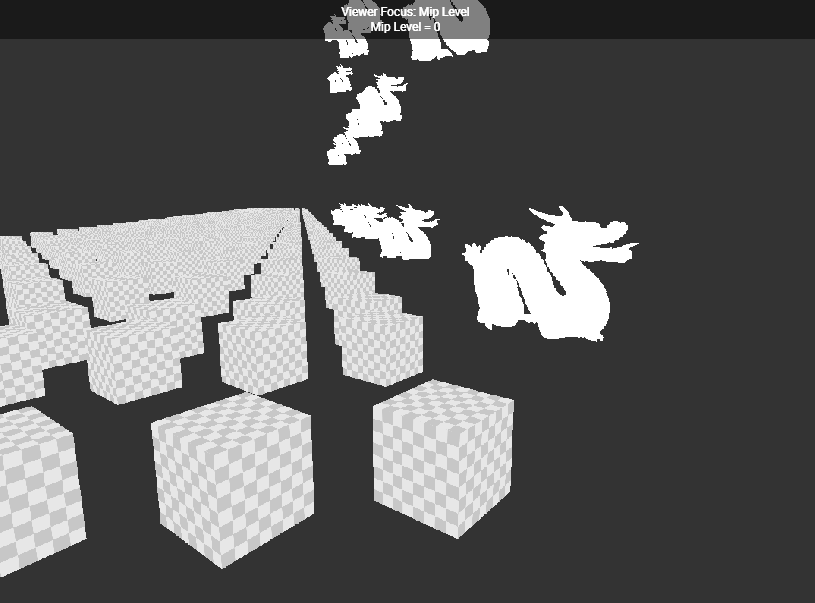
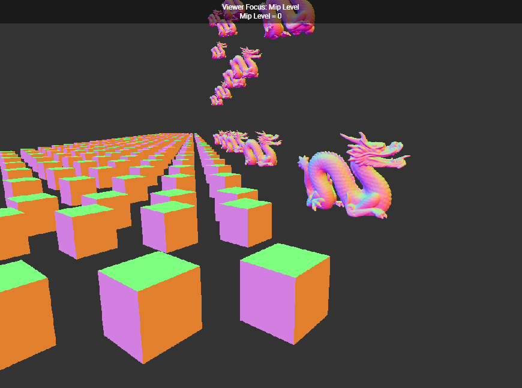
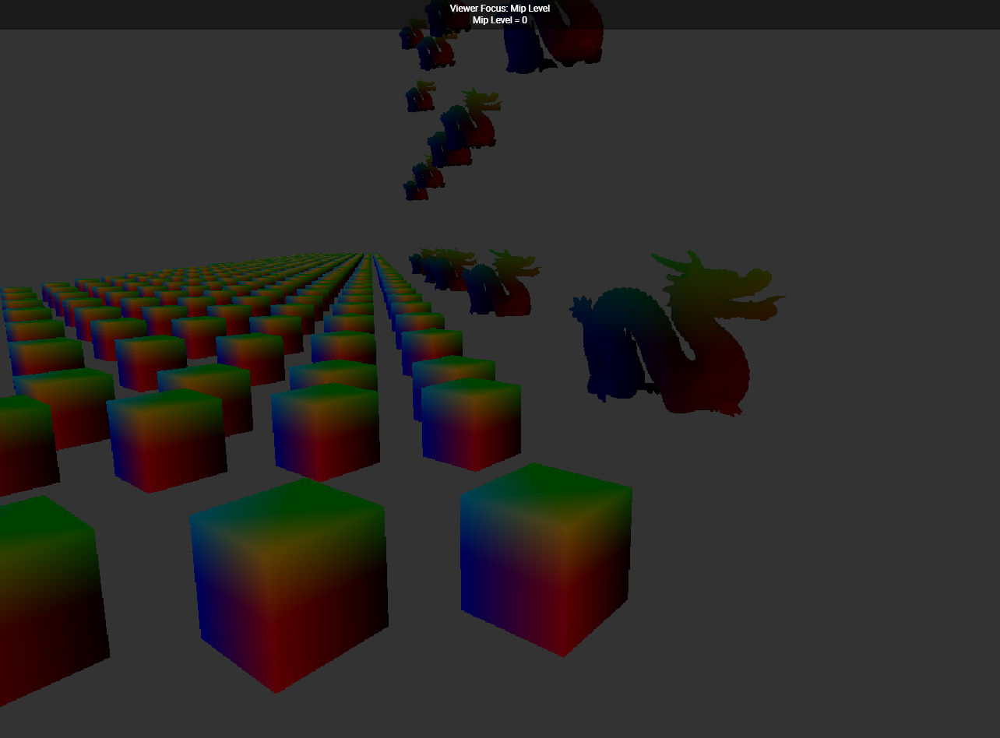
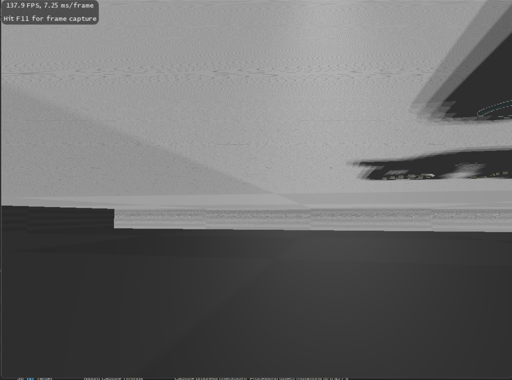
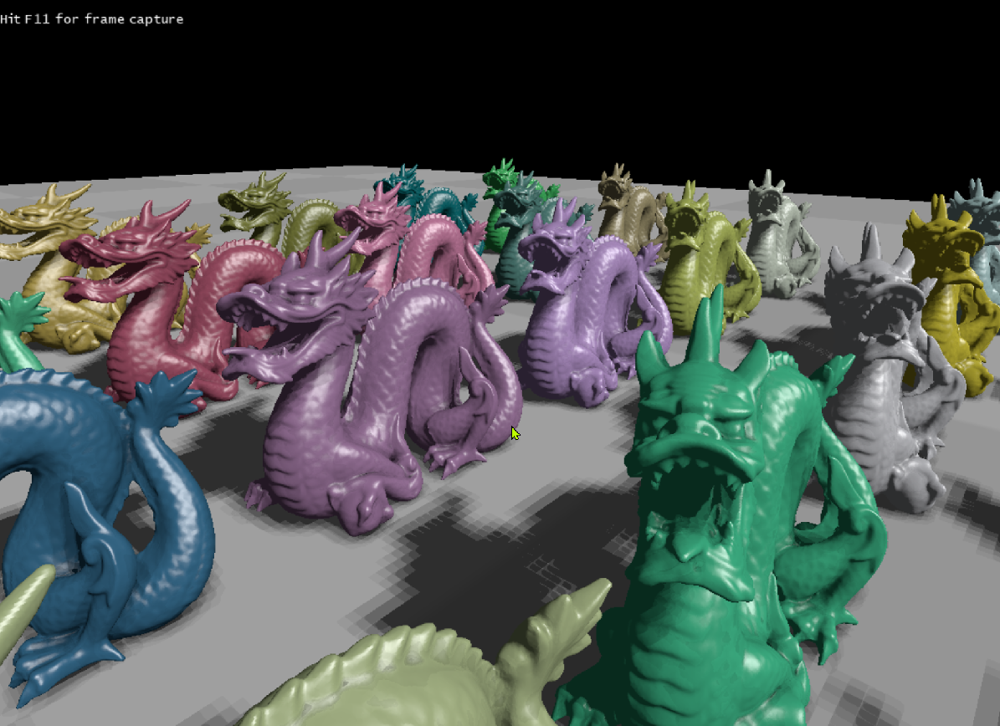
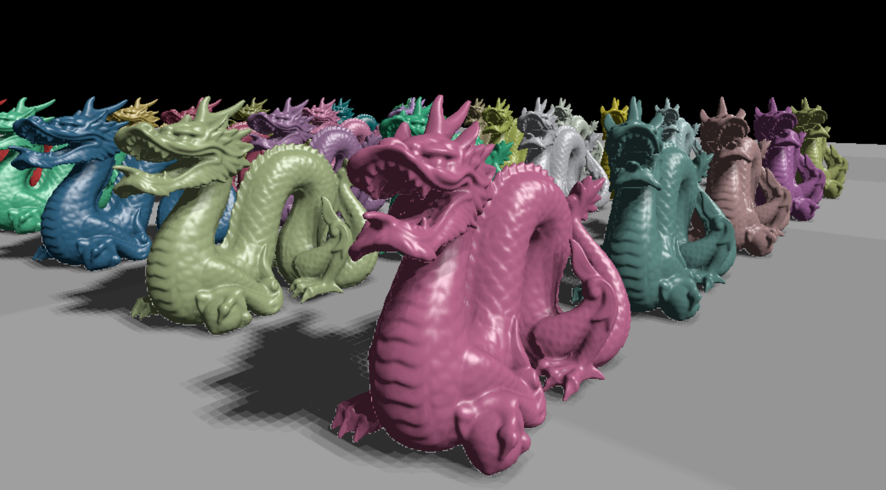

커스텀 C++ 게임 엔진
World · Render · RHI ·
Asset, 4개 Thread로 게임 로직과 렌더링을 나눈 Unreal 스타일 구조로 짬.
본업의 OpenGL ES 지도 렌더러 바깥에서 해보고 싶었던 걸 여기 다 담았고, 위 메뉴의 네 시스템이 이 엔진
위에 얹혀 있음.
- 01핵심 내용 & 전체 구조
- 02결과물
- 03개발 히스토리
- 04Threading & 프레임 동기화
- 05네 개의 Layer (상세 & Diagram)
- 06실제 코드에서 발견한 것들
- 07기능 현황
- 08해결한 이슈
- 09기술 노트
- 10버그
핵심 내용 & 전체 구조
Thread 5개가 각자 맡은 단계만 처리함 — 아래 그림 한 장이 엔진 전체임지그재그로 읽으면 됨 — Main(←) → World(→) → Render(←) → RHI(→). World → Render, Render → RHI 경계마다 FrameGate가 있어서 앞 Thread가 뒤 Thread보다 최대 3프레임까지만 앞서 나감. 그래픽스 API를 부르는 건 RHI Thread 하나뿐이고, Asset Thread도 GPU 업로드는 직접 하지 않고 명령만 기록해서 넘김.
IsDirty()만 뒤집으면, Scene이 감지해서
Commander를 통해 스냅샷을 내보냄. World 코드 어디에도 렌더러 타입이 등장하지 않음.LinearArena가 핑퐁 방식으로 동작 — World Thread가
하나에 람다를 쓰는 동안 Render Thread가 다른 하나를 비움.HashSet::Insert가 프레임당 200만 번 무조건 호출되던
것을 if (!IsDirty()) 가드 하나로 5.4 → 22 FPS(Release)까지 끌어올림.특징
RHICommand<T>라 실행 시점에 가상 함수 호출
Overhead가 없고, OpenGL Context는 RHIWorker Thread 하나로만 격리해서 Thread 안전성을 구조적으로
확보함.주요 내용
결과물
섀도우 매핑 · Deferred Rendering · 100만 Instance 최적화성능 최적화 여정 — 100만 Instance 병목 추적기
이슈 #25 한 건에서 한 달(2026-04-22 ~ 2026-05-23)에 걸쳐 실제로 있었던 일임 — Profiler로 병목을 찾고, 고치고, 중간에 리팩토링으로 오히려 성능이 떨어지기도 하고, 다시 고치고, 다음 병목을 찾는 과정을 그대로 옮김.
SceneProxy::UpdateRotation → UpdateTransform →
glm::detail::mul4x4가 압도적 1위. GLM이 SIMD 없이 컴파일돼서 mat4×mat4가 전부 스칼라 루프로
도는 게 원인이었음.FInstancedStaticMeshSceneProxy를 참고해 InstancedStaticMeshProxy
개념을 도입하던 중, 이전 엔진이 100만 개 @ 20 FPS(Release)를 버텼던 반면 리팩토링 직후 버전은
10만 개에서야 20 FPS로 오히려 후퇴함 — 리팩토링이 항상 개선을 보장하지 않는다는 걸 Profiler가
바로 알려준 사례임.local_size_x = 64 Compute Shader가 RawTransform SSBO(위치·쿼터니언·스케일)를
읽어 Transform SSBO(mat4)로 계산함. 결과: Debug 10만 개 안정 20 FPS(리팩토링 전에는 3만 개에서도
10 FPS 밑으로 떨어졌음), Release 50만 개 ~15 FPS.HashTable::Rehash 내부의
임시 DynamicArray 생성을 새 할당 Hotspot으로 지목함. 다음 단계로 대량 삽입 전에
예상 용량만큼 Reserve를 미리 호출해서 Hot Path에서 Rehash 자체를 없애는 방향을
이슈에 남겨둠.


HashSet::Insert를
if (!IsDirty()) 가드로 프레임당 1회로 축소: 5.4 → 22 FPS (Release).개발 히스토리
실제 커밋 기준 — 2023년 DirectX 11 1기, 2025.12 OpenGL로 다시 시작한 2기커밋 기록을 불러오는 중…
- 1기DirectX 11 엔진2023.03 — 2023.05 · 에디터부터 만들다가 메모리 문제에서 막힘
- 2023.03.23Engine첫 커밋 — DX11 CoreEngine + ImGui 레이어파일 · 프로퍼티 브라우저 레이어와 프로젝트 저장/불러오기까지 구현.
- 2023.04.21EngineECS 구조 도입 — Entity · ComponentManager · NodeManager
- 2023.05.13EngineComponentManager 재할당 → Pointer 무효화vector가 늘어날 때마다 Component Pointer가 전부 무효화되는 문제를 겪음 — 6일 뒤 "memory pool" 아이디어 커밋으로 이어지고, Memory · Log · ECS를 독립 저장소로 떼어내는 계기가 됨.
- 2기OpenGL로 재시작 — 4-thread 뼈대2025.12 — 2026.03 · 라이브러리를 먼저 다시 짠 뒤 엔진을 처음부터 조립
- 2025.12.18
- 2025.12.31EngineFramework 뼈대 — Engine · Worker · InputStorage, World/Render Worker 분리
- 2026.01.14Engine첫 화면 — WGLContext + GLSystem + RHICommandList로 사각형 출력
- 2026.01.27EngineRHI / Proxy 기반 아키텍처파일 45개가 한 번에 바뀐
736602c— World가 렌더 타입을 직접 안 건드리는 지금의 경계가 이 시점부터 시작됨. - 2026.02.01EngineAsset 모듈 + GLSystem 본구현 + RHIWorkerLoader · Parser · Worker로 나뉜 Asset 모듈, 버퍼 · 셰이더 · 텍스처를 다루는 GLSystem 709줄, RHI 명령을 따로 실행하는 RHIWorker가 한 번에 들어옴.
- 2026.02.21EngineWGL Context 소유권을 RHI Thread로 이전 → 멀티스레드 첫 렌더링OpenGL Context가 Thread 종속이라 생기던 문제 — Context를 RHI Thread가 소유하게 바꾸고 나서야 단색 배경이 멀티스레드에서 처음 그려짐.
- 2026.02.22EngineRHICommandExecutor → RHIFrameExecutor(프레임 링) / RHITaskExecutor(업로드) 분리
- 2기Deferred · 성능 · Lighting · Shadow2026.04 — 2026.06 · 엔진 커밋이 가장 많았던 석 달
- 2026.04.04EngineFrameGate 도입 — 동기화와 데이터 보관을 분리
FrameContext하나가 Thread 동기화와 프레임 데이터 보관을 같이 맡던 구조를 정리 — 동기화는 FrameGate로, 데이터는 RenderCommand/Proxy로 쪼갬. - 2026.04.17EngineMeshBatch Instancing + Normal Mapping (Stanford Dragon)
- 2026.05.21EnginePipeLine → RenderPass 아키텍처 전면 교체, Deferred Rendering 완성전역 싱글턴 3개(GlobalResource · GlobalSampler · GlobalPipeLine)를
GlobalRenderer하나로 합치고,eResourceSlot과 셰이더 바인딩 이름 규칙(u/t/o 접두사)을 이때 처음 세움. 3개 커밋으로 지금의 Renderer 구조가 만들어짐 (PR #28). - 2026.05.24
- 2026.06.01EngineMulti-proxy Dirty Flag 경합 → Proxy별 세대 카운터
- 2026.06.02EnginePhong Point · Spot Light, GBuffer UInt 비트 패킹
- 2026.06.27EngineDirectional Shadow — 시머링 · acne · NaN까지 정리Slope Bias + PCF(06.21) → Light Space 텍셀 스냅으로 시머링 제거(06.25) → RPDB + Normal Offset + NaN-safe 분모로 grazing 각도 깜빡임 해결(06.27).
- 2기Vulkan 백엔드 · RHI 재설계2026.06 말 — 현재
- 2026.07.15EngineVulkan 프레임 루프 동작06.30 Instance · Device 선택 → 07.09 Surface · Swapchain → 07.11 Command Buffer → 07.15 Semaphore · Fence로 acquire → submit → present.
- 2026.07.22EngineVulkanMemory — 4MB 블록 + TLSFArena 서브 할당Container에 하루 전(07.21) 들어간 TLSFArena를 그대로 상속. 08.07에 블록을 묶는 키를 memoryType 인덱스 →
VkMemoryPropertyFlags로 바꿈 — 서로 다른 인덱스가 같은 속성을 가질 수 있어서. - 2026.08.08
- 2026.09.03EngineVulkan Buffer · Texture 파이프라인생성 · 초기화 · 갱신 · 리사이즈로 책임을 나누고 Staging Buffer 풀과 Buffer → Image 복사를 추가. RHI의 Set/Unset은 이름 대신 binding 번호 기반으로 통일하고, Vulkan에 대응 연산이 없는
UnsetConstant는 인터페이스에서 뺌. - 2026.10.14EngineHLSL 전환을 시도했다가 GLSL 단일 소스로 복귀DXC는 블록 밖 상수를
$GlobalsUBO로 묶고, glslang의 Vulkan 타깃은 블록 밖 uniform을 거부함 — 한 소스로 GL · Vulkan을 같이 돌리려면 어차피 이름 있는 UBO 블록이 필요해서 GLSL로 되돌림. 공용 정의는Common.glsl하나, GLSLParser가#include를 펼침. - 2026.10.18EngineRHI 공용 계층 재설계RHISystem을 진입점(namespace)으로, 백엔드를
RHIContext(GL / Vulkan)로 분리. 셰이더 리플렉션을 합치는 RHIStage, 블록 기반 상수 Ring Buffer 도입 — update/vulkan-rhi 브랜치에서 진행 중. 구조는 Vulkan 절 그림 참고.
Threading & 프레임 동기화
FrameGate — producer/consumer 조건 변수 쌍Submit()은 차이가 한도(3) 이상일 때만, Consumer의
Acquire()는 차이가 0일 때만 대기함 — 평소엔 atomic 값만 읽고 지나가서 락을 잡지 않음.
World → Render(updateGate), Render → RHI(renderGate) 두 경계에 하나씩 있음.recordIndex는 Render Thread만, beginIndex는 RHI Thread만
씀 — 두 Thread가 같이 보는 건 atomic endIndex 하나뿐이고, acquire/release 순서로 기록 내용이
보이는 시점을 보장함. Mutex 없는 SPSC 구조.NotifyAll()을 먼저 걸어 대기 중인 Thread를 깨운 뒤
World → Asset → Render → RHI 순서로 Worker를 멈추고, RHICommandList를 쓰는 Worker가 전부 멈춘 다음에야 RHI
Context를 놓음.네 개의 Layer — 상세 내용 & Diagram
World는 렌더 타입을 모르고 · RHI만 그래픽스 API를 부름WorldContext
Entity, Component, 그리고 밖으로 나가는 단방향 다리임. Scene::Flush()는
추가/삭제/갱신 3단계를 순서대로 도는데, 각 단계가 끝날 때마다 대상 HashSet을
비움.
ProxyComponent는 렌더러와 직접 대화하지 않음 — IsDirty()만 뒤집으면
Scene이 알아채고 Commander를 통해 스냅샷을 내보냄. Commander가 캡처하는 람다는
[renderView](Renderer*, RefPtr<RHICommandList>){ renderer->SetView(renderView); }
처럼 값 캡처 위주라 힙 할당이 거의 없음.
Renderer
RenderScene과 RenderGraph를 소유함 — 렌더링 쪽 객체는 전부 이 둘 중 하나를 거침.
RenderGraph는 ECS::Graph<RenderPass>를 상속 — ECS가 System 실행 순서를
정할 때 쓰는 위상정렬을 그대로 재사용함. 지금은 SetDependency로 한 줄 체인을 걸어둔 상태라 분기는 없음.
transform SSBO + 머티리얼을
바인딩하고, Batch 안의 모든 Instance를 인덱스 Draw 한 번으로 그림.SetDependency가
미리 걸려 있어서, "Graph" 구조인데 실제 파이프라인은 분기 없는 직선임.groupX = ceil(instanceCount / 64), Y/Z는 항상 1.
transform.cs.glsl의 local_size_x = 64와 맞물려 있는데,
생성자에서 넘기는 ComputePass(64, 64, 64) 그룹 크기는 아무 데서도
읽히지 않는 죽은 인자임 — Dispatch 시점에 로컬 상수 64를 다시 씀.Draw()는 상태 체크만 하고 항상 true, GetResourceState()도
항상 eReady로 하드코딩. 다만 카메라/Indirect Draw Buffer/가시성 Buffer/AABB Buffer를 바인딩하는
SetCommand()는 이미 존재함. 짝을 이루는 culling.cs.glsl은
이름과 달리 Compute가 아니라 Vertex Shader 내용이라, Culling은 Shader·Dispatch·Pass 로직 전부
미구현 상태임.OverlayPass.h/.cpp 둘 다 0바이트 —
Class 선언조차 없는, 시작조차 안 된 자리표시자임.GeometryPass가 한 프레임에 이 3개 채널을 GBuffer로 나눠서 씀 — LightingPass가 이 값들만 갖고 라이트별로 다시 계산. Position 채널은 실제로 저장되는 렌더 타깃이 아니라, Depth에서 그 자리에서 재구성한 디버그 시각화(이슈 #30 참고).



RHI
그래픽스 API를 직접 호출할 수 있는 유일한 Layer임. Command Class는 41개(초기화 11 · 갱신 3 ·
리사이즈 2 · 제거 7 · Set 8 · Unset 7 · 프레임/Dispatch 3)이고, 전부 CRTP로 만든 RHICommand<T>
라 실행 시점엔 vtable이 아니라 함수 Pointer 하나로 Dispatch됨. 아래 다이어그램 3개는 master 기준(GLSystem이
RHISystem을 구현하던 구조)이고, 2026.10 재설계 후 구조는 Vulkan 절에 있음.
RHIWorker만 실행함.
리소스 삭제는 RHISystem이 즉시 지우지 않고, 7종 HashSet에
모아뒀다가 GLSystem::FlushPending()이 Flush 시점에 한 번에 처리함 — Thread 경계를
넘나드는 glDelete* 호출을 구조적으로 막는 장치.
Vulkan 백엔드 & RHI 재설계 진행 중
Vulkan을 붙이면서 OpenGL에 맞춰져 있던 RHI 공용 계층을 Explicit API 기준으로 다시 짜는 중. 새 아키텍처를 따로 세운 게
아니라 RHICommand<T> 기록 · RHIWorker 실행 모델은 그대로 두고, 그 아래
(상태 · 바인딩 · 상수 · 백엔드 경계)를 바꾸는 작업임. 그림은
update/vulkan-rhi
브랜치 기준(2026.10).
OUT_OF_DATE/SUBOPTIMAL
리사이즈 처리. 그 위에 Buffer · Texture 생성과 Staging 업로드, Buffer → Image 복사, Barrier, Sampler, VertexLayout,
Shader(GLSL → SPIR-V 컴파일 후 SPIRV-Reflect로 입력 location과 바인딩 검증)까지 동작함.VkMemoryPropertyFlags)별로 고정 4MB VkDeviceMemory
블록을 필요할 때 만들고 비면 반환 — Resource마다 VkDeviceMemory를 따로 할당하는 흔한
Anti-pattern을 피함. 블록 내부 서브 할당은 Container Library의 TLSF 구현을 그대로 상속해서 씀.Common.glsl 한 파일에 BINDING_* 번호와 공용 구조체를
모아서 GL · Vulkan이 같은 소스를 씀.Asset
3단계, 3개의 서로 다른 Thread — Parse가 메인 루프를 절대 막지 않고, Upload는 RHIWorker 밖에서 절대 실행되지 않음.
eNone --TaskWorker.Parse()--> eLoaded --AssetCommander.Load() GPU 업로드--> (상태 전이 없음) Parse = CPU 바운드, TaskWorker 풀(유휴 Worker가 있을 때만 — 없으면 AssetSystem Queue에 다시 넣어 다음 패스로 미룸) Load = GPU 업로드(AssetCommander), RHIWorker 전용 ※ eAssetState는 eNone/eError/eLoaded/eExpried(오타)/eDirty뿐 — "완료(eReady)" 상태는 없고, 준비 여부는 texture/buffer/shader Pointer가 non-null인지로 판단
설계가 바뀌어온 과정(RHI/Proxy 경계, FrameGate, RenderPass 전환, Vulkan)은 개발 히스토리에 커밋 날짜와 함께 정리해둠.
실제 코드에서 발견한 것들
설계 문서가 아니라 소스를 직접 읽고 확인한 내용 — 이후 고친 항목은 "수정됨" 표시
이 섹션은 Docs/Design_*.md 요약이 아니라, 2026.08 코드 리뷰 때 Engine/Private
과 Engine/Public의 실제 구현을 다시 읽으면서 확인한 내용임. 문서와 다른 부분,
그리고 흥미로운 설계 판단 몇 가지를 그대로 남겨둠.
GetPipeLine()이 채우는 RHIPipeLineCreateDesc에
blend 필드가 끝까지 비어 있음. 로컬로 RHIBlendState
blendState; blendState.enable = false;를 선언은 하지만 어디에도 대입·전달되지 않는 죽은
코드임 — 이 구조가 성립하려면 Blend를 꺼야 하는 게 아니라 라이트별로 누적되도록 Additive
Blending을 켜야 함. 라이트가 하나뿐인 데모에서는 드러나지 않는 버그임.GetResourceState() != eReady
이거나 Draw()가 false를 반환하면 그 자리에서 루프를 break
— 문제 있는 Pass 하나만 건너뛰는 게 아니라 이후 Pass 전부가 이번 프레임에 안 그려짐.struct WorldCommand {}; 정도만 있고 WorldContext::Prepare()
는 그냥 // TODO. World→Renderer 트래픽은 전부 Commander/RenderCommandList로만
흐르고 있어서, 이 Class는 설계 초기 흔적으로 보임.execute->~RenderTask()를 호출하고,
바로 다음 줄에서 execute->next를 읽었음. next가
trivial한 raw pointer라 실제로는 문제없이 동작했지만, 소멸자 호출 후 멤버를 읽는 건 엄밀히는 정의되지
않은 동작임 → 소멸자 호출 전에 next를 먼저 읽도록 바꿈.TaskWorker가 있을 때만 별도 Thread로 넘기고, 없으면
AssetSystem::AddTask()로 다시 Queue에 넣어 다음 패스로 미룸 — 동기적으로
직접 파싱하지 않고, "병렬 파싱"이 항상 보장되는 것도 아님.Engine::InitAsset()이 AssetWorker를 하나 만든 직후,
InitWorker()가 SetTaskThread(4) 설정으로 또 하나를
만들어 m_assetWorker를 덮어씀 — 첫 번째 Instance는 조용히 버려졌음 →
InitAsset()을 없애고 InitWorker() 한 곳에서만 만들도록 정리.break가 없어서, WM_CLOSE에서
설정한 m_status = eClosed가 같은 호출 안에서 곧바로 다시 eActive로 덮어써졌음.
실제 종료는 상태 체크가 아니라 close Callback → Engine::Shutdown() →
m_window 리셋 → Run() 루프의 null 체크로 빠져나가는
경로로 이루어지고 있었음 → WM_CLOSE · WM_SIZE를 각자 case로 분리.m_InputData[3] — 메인 Thread가 쓰는 m_CurrData,
핸드오프용 atomic<InputData*> m_PrevData, WorldWorker가 읽는
m_LogicData. 256개 키코드 전체 상태를 4비트(Down/Press/Release/Repeat)로
패킹한 128바이트 배열로 저장함.DynamicArray<RefPtr<TaskWorker>>이고, Thread 개수 4는
Engine.cpp에 하드코딩. 분배는 라운드로빈이 아니라 첫 번째로 유휴 상태인 Worker를
선형 탐색. Win32InputHandler의 입력 Queue도 Backpressure 없이
MAX_QUEUE_SIZE를 넘으면 그냥 통째로 비워 밀린 입력을 버림.Task<Args...>는 std::function<void(Args...)>
얇은 Wrapper일 뿐인데, Asset/TaskWorker 쪽은 DefaultTask = Task<>로 인자 없이
Closure에 전부 캡처해서 쓰고, RenderTask : Task<Renderer*, RefPtr<RHICommandList>>
는 실제 인자를 받으며 커스텀 Allocator 위에 Intrusive List Node로 placement-new됨 — "제네릭" Template이
사실상 한쪽 전용 소비자를 위해 존재하는 셈임.eAssetState는 eNone / eError / eLoaded /
eExpried(오타) / eDirty 뿐임. GPU 업로드(AssetCommander::Load) 이후
별도 상태 전이가 없어서, 준비 여부는 상태값이 아니라 texture/buffer/shader Pointer가 non-null인지로
다른 코드가 추론함.eResourceType은 9개 값(Buffer/Texture/Sampler/Shader/PipeLine/
Layout/Target/Const/Pass)이 따로 있는데, RHIDrawIndexDesc는
eLayout을, RHIDispatchDesc는
ePipeLine을 그대로 재사용했음 — Draw Command와 VertexLayout이
desc.type 값만으로는 구분되지 않았음 → eGraphics /
eCompute 태그를 새로 추가.stbi_load_from_memory는 항상 8비트 데이터를 반환하는데,
componentType은 소스에 따라 eFloat/
eUInt로 설정됐음. sRGB 판별도 IHDR 바로 다음 청크 하나만 검사했음 → 16비트 PNG는
stbi_load_16 경로로 분기하고 componentType을 실제 비트 수에 맞춤, sRGB 판별은
IHDR ~ IDAT 사이 청크를 전부 검사하도록 바꿈.기능 현황
저장소 README의 Implementation Status 기준 + 2026.10 작업 반영| 기능 | 상태 |
|---|---|
| ECS / Memory(GC) / Reflection / Containers | 완료 |
| World · Commander · Scene · 4-thread Worker 시스템 | 완료 |
| RHI Layer(OpenGL) · Command List · 트리플 버퍼링 | 완료 |
| Proxy · MeshBatch Instancing · RenderGraph | 완료 |
| TransformPass(GPU Compute TRS) | 완료 |
| GeometryPass · LightingPass(Directional / Point / Spot) | 완료 |
| GBuffer Phong(UInt Texture 지원) | 완료 |
| Asset 시스템(3단계 비동기 파이프라인) | 완료 |
| Directional 섀도우 매핑 | 완료 |
| CullingPass | Stub — pass-through |
| GC 전체 통합 | 진행 중 |
| Cascade 섀도우 맵 | 예정 |
| Spot / Point 라이트 섀도우 | 예정 |
| Vulkan 백엔드 — 프레임 루프 · 메모리 · Buffer · Texture · Shader 구현, Pipeline · Draw 남음 | 진행 중 |
| RHI 공용 계층 재설계 — RHIContext · Transition · 상수 Ring Buffer | 진행 중 |
| 물리 엔진 | 예정 |
해결한 이슈
저장소 이슈 트래커와 디버그 로그 기준섀도우 acne / NaN / 깜빡임 해결
det)가 0에 가까워지며
NaN이 발생, FragColor까지 그대로 전파됨.safeDet = mix(EPSILON,
det, step(EPSILON, abs(det)))) — 곱셈이나 mix로는 NaN을 지울 수 없기
때문. grazing 컷오프도 맨 끝에서 한 번만 곱하도록 이동(dFdx 앞에서 분기하면 GLSL에서 undefined behavior).


Multi-proxy dirty flag race 해결
if (!IsDirty()) OnUpdate() 가드가 공유
Component에 있던 dirty 플래그를 지워버림 — 먼저 처리된 Proxy가 둘 다의 플래그를 지운 셈.Point Light 입사 방향 아티팩트 미해결
max(dot(normal, rayDir), 0.0)가 이
경우 0으로 클램프되어, 입사 방향 보정이 아예 걸리지 않음.기술 노트
구현하면서 직접 유도/정리한 그래픽스 이론 — 이슈 트래커에 전문을 남겨둠- 어떻게: World → View → Clip → (÷w) → NDC → Depth 순서를 거꾸로 밟아 복원. 핵심은 Position이 동차좌표에서 항상
w=1이라는 불변식.- 사이트 GBuffer 스크린샷의 "Position" 채널도 실제로 저장되는 렌더 타깃이 아니라, 디버그 시각화 Pass가 Depth로부터 그 자리에서 재구성한 것임.
q·v·q*이 3×3 회전 행렬과 같다는 걸 직접 손으로 증명
— 곱 전개 → Rodrigues 형태 변환 → Vector 연산을 행렬로 변환 → 쿼터니언 성분 대입, 4단계로 진행.- Library(GLM 등)가 이미 해주는 변환을 그대로 쓰지 않고, 왜 그 공식이 맞는지 끝까지 손으로 따라간 기록임.
reflect(I,N) = I - 2·dot(N,I)·N가 교과서 공식과 부호만 다르다는 것,
그리고 faceforward로 normal을 뒤집어도 반사 Vector 자체는 바뀌지 않는다는 걸
정리(NdotL 부호에만 영향).- 라이트가 표면 안쪽에 있는 two-sided 케이스 3가지 방법을 비교:
abs(NdotL)(specular
방향이 틀어짐) → faceforward(diffuse만 고침) →
incidentDir 보정(권장 — 입사 방향 자체를 표면 앞쪽으로 재계산). 이 세 번째
방법이 실제로 채택된 방향이고, engine.html의 "Point Light 입사 방향 아티팩트" 이슈와 이어짐.- 감쇠식은
1/(d²+1)로 d→0 발산을 막고,
range 기반 falloff를 곱해 range 밖에서 매끄럽게 0이 되도록 함.
- 여기서 정리한 NaN/acne/grazing 원인 분석이 실제로 site의 "섀도우 acne / NaN / 깜빡임" 이슈 해결로 이어짐.
버그
2026.08 코드 리뷰에서 직접 찾아 이슈로 등록한 것들 — 11건 중 9건 수정, 상태는 실시간 동기화실제 버그 11건 — 9건 수정 완료 클릭해서 펼치기
- 원인:
GetPipeLine()이 채우는 RHIPipeLineCreateDesc의
blend 필드가 끝까지 비어 있음. 로컬로 RHIBlendState
blendState; blendState.enable = false;를 선언은 하지만 어디에도 대입·전달되지 않는 죽은 코드임.- 개선 방향: Additive Blending(
ONE, ONE)을 desc.blend에
연결해야 함. 라이트가 하나뿐인 데모/스크린샷에서는 드러나지 않아서 지금까지 남아있었던 것으로 보임.
Engine::InitAsset()이 AssetWorker를 하나 만든 직후,
InitWorker()가 SetTaskThread(4) 설정으로 또 하나를
만들어 m_assetWorker를 덮어씀. 두 번째 Instance가 정상 동작해서 당장 문제는
없지만, 첫 번째가 만든 Thread/Resource가 조용히 새는 초기화 순서 버그임.- 수정(2026.08.08):
InitAsset()을 없애고 InitWorker()만 AssetWorker를 만들도록 정리. (PR #61)
break가 없어서, WM_CLOSE에서 설정한
m_status = eClosed가 곧바로 eActive로 되돌아감.- 실제 종료는 이 상태값이 아니라 close Callback →
Engine::Shutdown() →
m_window 리셋 → Run() 루프의 null 체크로 빠져나가는
별개 경로로 이루어짐. 종료 자체는 되지만, GetStatus()를 신뢰하는 코드가
있다면 오작동함.- 수정(2026.08.08): WM_CLOSE · WM_SIZE를 각자 case로 분리해서, 상태를 정한 뒤 바로
HandleMessage()로 넘김. (PR #61)
eResourceType은 9개 값이 따로 있는데, RHIDrawIndexDesc는
자기 것 대신 eLayout을, RHIDispatchDesc는
ePipeLine을 그대로 재사용함. 지금은 이 필드로 타입을 분기하는 코드가 없어서
조용히 묻혀 있음.- 수정(2026.08.08):
eResourceType에 eGraphics / eCompute를 추가하고 두 Desc의 태그를 교체. (PR #61)
stbi_load_from_memory는 항상 8비트를 반환하는데,
componentType은 eFloat/eUInt로
설정됨 — 둘 다 실제 eUByte와 맞지 않음. sRGB 판별도 IHDR 바로 다음
청크 하나만 검사해서 오탐/누락 여지가 있음(코드 안에 TODO로 남아 있음).- 수정(2026.08.08):
stbi_is_16_bit_from_memory로 분기해 16비트는 stbi_load_16_from_memory를 쓰고, componentType · 픽셀 포맷을 실제 비트 수에 맞춤. sRGB는 IHDR ~ IDAT 사이 청크를 전부 검사. (PR #61)
execute->~RenderTask()를 호출하고 바로 다음 줄에서
execute->next를 읽음. next가 trivial한 raw
pointer라 지금은 문제없이 동작하지만, 엄밀히는 정의되지 않은 동작이라 공격적인 최적화나 sanitizer
환경에서 깨질 수 있음.- 수정(2026.08.08): 소멸자를 부르기 전에
next를 먼저 읽도록 순서를 바꿈. (PR #61)
vkCreateBuffer()를 인자 없이 호출하고, 끝에 매달린
VK_BUFFER_USAGE_VERTEX_BUFFER_BIT; 구문이 그대로 남아 있음.-
VulkanMemory::CreateBlock도 memoryType과
blockSize 인자가 호출부에서 뒤바뀐 것으로 보였음 — Vulkan 백엔드가
한창 작업 중이라 있을 수 있는 상태였음.- 수정(2026.09.03): Buffer 경로를 생성 · 초기화 · 갱신 · 리사이즈로 나눠 완성 — Vulkan 절 참고.
if (!glPipeLine || glPipeLine->GetID() == GL_NONE) 분기 안에서
glPipeLine->GetID()를 바로 호출함 — glPipeLine이
null이면 그 자리에서 크래시임.- 조건 자체도 다른 모든
Flush* 함수와 반대임: ID가 이미
GL_NONE인(할 게 없는) 경우에만 glDeleteProgram을
부르고, 실제로 지워야 할 유효한 프로그램은 절대 안 지워짐 — 파이프라인을 만들 때마다 GL 프로그램
객체가 영구적으로 leak됨.- 수정(2026.08.08): 참조 수가 1보다 크면 pending에 그대로 두고, pending 목록이 마지막 참조일 때만
glDeleteProgram을 부르도록 조건을 바로잡음. (PR #61)
eError 상태를 설정한 뒤에도
return이 없어서, 바로 다음 줄의
glTexture->SetID(textureID)/SetState(eReady)가
그대로 실행됨 — 방금 삭제한(더 이상 유효하지 않은) GL Texture 이름을 "준비됨" 상태로 표시해버림.- 수정(2026.08.08): 실패 경로에서
SetID(GL_NONE) · SetState(eError)를 명시하고 성공/실패 분기를 분리 — 실패한 Texture가 eReady가 되는 경로를 없앰. (PR #61)
InitializeRenderPass/SetRenderPass/UnsetRenderPass가
전부 빈 함수이고, GLRenderPass엔 GL 오브젝트 자체가 없음.
FlushRenderPass/RemoveRenderPass도 없어서
m_pendingRenderPasses가 선언만 되어 있고 아무도 채우거나 비우지 않음 —
RenderPass RefPtr이 있다면 그것도 영구 leak임.
rotation 인자와 현재 값을 비교하려고
eulerAngles를 뽑아놓고는, 실제 대입은
transform.rotation = glm::quat(eulerAngles) — 새 값이 아니라 방금 분해한
기존 값으로 다시 씀. 복붙하다 인자를 놓친 것으로 보이는 명백한 버그로, 같은 파일의
TransformComponent::UpdateRotation과
SceneProxy::UpdateRotation은 둘 다 맞게 새 값을 대입함. 이 오버로드는
지금 Camera 경로에서는 안 쓰이지만, Instancing 메시의 개별 회전 갱신 경로에서 조용히 no-op이 됨.- 수정(2026.08.08):
transform.rotation = glm::quat(rotation)으로 새 값을 대입. (PR #61)
버그는 아니지만 — 미구현 / 죽은 코드 4건 클릭해서 펼치기
Draw()는 상태 체크만 하고 항상 true 반환,
GetResourceState()도 항상 eReady로 하드코딩. 카메라/Indirect Draw Buffer/
가시성 Buffer/AABB Buffer를 바인딩하는 SetCommand()는 이미 있어서, 나중에
실제 Culling 로직만 끼워넣으면 됨. culling.cs.glsl은 이름과 달리 실제로는
Compute가 아니라 Vertex Shader 내용임.
struct WorldCommand {}; 정도만 있고 WorldContext::Prepare()는
그냥 // TODO임. World→Renderer 트래픽은 전부 Commander/RenderCommandList로만
흐르고 있어서, 설계 초기의 흔적으로 보임.
eAssetState는 eNone / eError / eLoaded /
eExpried(오타, Expired가 맞음) / eDirty뿐임. GPU 업로드 이후 별도 상태 전이가 없어서,
준비 여부는 상태값이 아니라 texture/buffer/shader Pointer가 non-null인지로 판단함.
GitHub에 지금 열려 있는 이슈 (실시간)
불러오는 중…